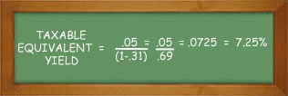

Another issue that few investors fully consider in managing their portfolio is the impact of taxes on portfolio returns. Everyone understands that taxes can, and do, have a significant impact on the return of a portfolio, yet many fail to proactively manage its impact. The result is a portfolio that is tax-inefficient.
Some income from investments is treated as ordinary income and is taxed at the individual’s marginal rate, which, in 2014, could be as high as 39.6%. Examples of this are most money market interest, corporate bond interest, short-term capital gains on the sale of appreciated assets held less than a year, and nonqualified dividends. But there are exceptions and certain situations where more favorable tax treatment can be obtained. Learning strategies to take advantage of these can significantly enhance the after-tax investment return.
There are four key areas within the income tax rules where strategies for greater tax-efficiency can be achieved.
Click on each area to view more information.A capital gain is the investment return caused by appreciation in the price of the investment from the time it was purchased until it is sold; a capital loss is the investment loss due to a decline in price by the time it is sold.
Capital gains are taxed on the basis of two key factors:
Capital gains on investments held for less than a year are considered short-term capital gains and are taxed as ordinary income, while gains on investments held for longer than one year are considered long-term capital gains and are taxed at lower rates. In 2015, long-term capital gains are taxed at 20% (for those in the 39.6% tax bracket), 15% (for those in 25, 28, 33, and 35% brackets), and 0% (for those in the 10 and 15% tax bracket).
Thus, one strategy for achieving tax efficiency is to hold assets for at least a year before selling. A similar strategy is to avoid excessive trading activity in the portfolio, since rapid turnover of securities generates more short-term gains that are taxed as ordinary income.
Capital losses can offset capital gains with no limit in a given tax year, and up to $3,000 of net capital losses can be deducted from gross income in a given tax year. If an individual has more than $3,000 of net capital losses, any additional amounts can be carried forward and used in subsequent years.
The process of computing net capital gains is to first net your short-term gains and losses, then net your long-term capital gains, and then net the short-term and long-term to each other.
As an example, if Bill had a long-term gain of $15,000 on Stock ABC and a long -term loss of $7,000 on Stock XYZ, the loss would be subtracted from the gain for a net long-term gain of $8,000. If he also had a net short-term loss of $1,000, when he combines his net long-term gain of $8,000 with his net-short term loss of $1,000, he is left with a reportable long-term gain of $7,000 on his income tax return. On the other hand, if Bill had ended up with a loss of $8,000, he could deduct $3,000 of that loss in the current tax year and carry forward the additional $5,000 to be used in subsequent years.
Thus, a strategy for greater tax efficiency is to look for opportunities to net losses and gains in a given tax year. For example, when approaching the end of a tax year with significant capital gains, investors will often examine the portfolio for assets that have declined in value since purchase. By selling these depreciated securities to generate capital losses, these losses can be netted against capital gains to reduce the investor’s tax bill for the year.
Similarly, since net capital losses in excess of $3,000 cannot be used to reduce taxable income in the current year and must be carried forward to future tax years, investors will often look for opportunities to utilize these excess losses in the current year by selling more appreciated securities before year-end and offsetting the additional gains with the excess losses.
Prior to 2003, ordinary dividends were taxed as ordinary income (i.e., taxed at the same rates as those applied to wages, salaries, tips, etc.); but beginning in 2003, certain ordinary dividends are deemed to be “qualified dividends,” which are taxed at a lower tax rate (equal to the long-term capital gain rate, which will be discussed later). This rate for 2015 is:
To qualify for this special tax rate as a qualified dividend, the following conditions must be met:
As the preceding conditions show, most domestic stock dividends are potentially qualified. But before they can be designated as such, the taxpayer must meet the holding period requirement. To determine if a taxpayer meets the holding period requirement, look within the window of time 60 days before and 60 days after the ex-dividend date. If the stock was held for more than 60 days within that 121-day window, then it meets the holding period to qualify for the lower taxation.*
Thus, by adopting strategies to have more qualified dividends vs. nonqualified dividends in the portfolio, greater tax efficiency can be achieved.
Income paid by municipal bonds is generally free from federal, state, and local income taxes (although taxes are paid on any capital gains that result from increases in bond prices during the investment period). Because of this tax-exempt status, municipals generally have lower coupons and corresponding yields than taxable bonds. To make an apples-to-apples comparison of yields, it is therefore necessary to compute a taxable equivalent yield.
Here's how taxable equivalent yields are calculated:
The Taxable Equivalent Yield is equal to the Municipal Bond Yield divided by one minus the individual's tax rate. For an individual in the 31% tax bracket, a municipal bond yielding 5% would have a taxable equivalent yield of:

In other words, for an investor in the 31% tax bracket, this 5% yield on a municipal bond is equal to the taxable bond yielding 7.25%.
Thus, particularly for clients at higher marginal tax brackets, greater after-tax return may be achieved through investments in tax-advantaged securities such as municipal bonds.
While this tax-exempt status is of value, especially to investors in high tax brackets, clients should be aware that issuers could potentially lose their tax-exempt status. Furthermore, under some conditions (such as private activity municipal bonds), cash flows to an investor can be subject to the Alternative Minimum Tax (AMT). This potential should be explored any time someone has potential for an Alternative Minimum Tax liability.
Employing strategies such as those discussed on this page can reduce the adverse effect that taxes have on a portfolio’s performance. However, it is important that these strategies be employed in an appropriate manner, recognizing the fact that managing the impact of taxes is AN issue in the investment decision-making process, not THE issue.